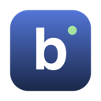

An AI research assistant for the lab, built on Stanford Biomni.
…
The 14 GB data library downloads later, the first time an analysis needs it. Setup takes about 5 minutes on a typical connection.
You can keep working while this runs.